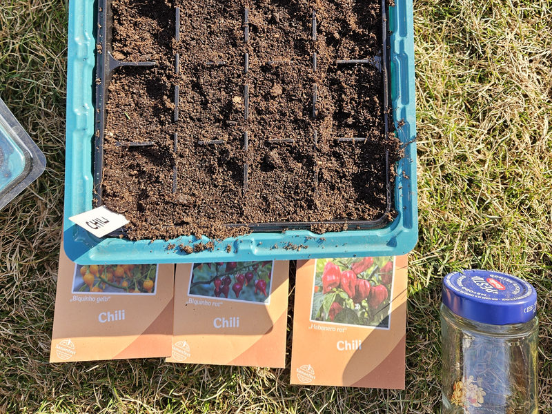
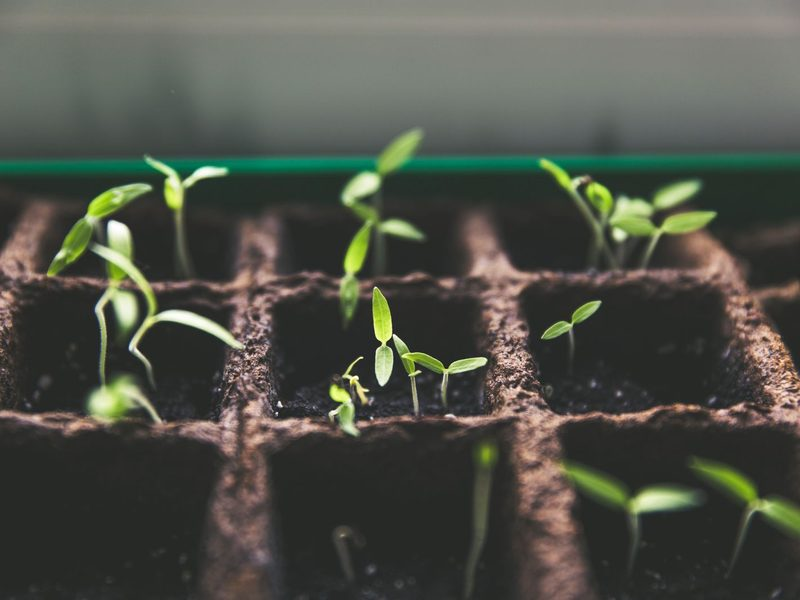
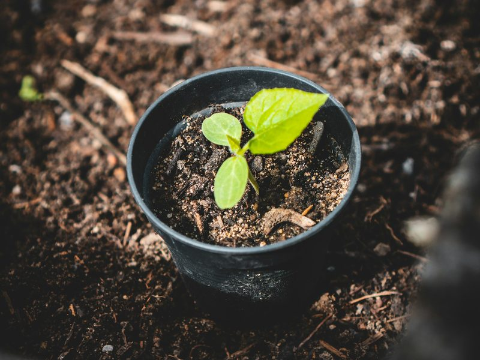
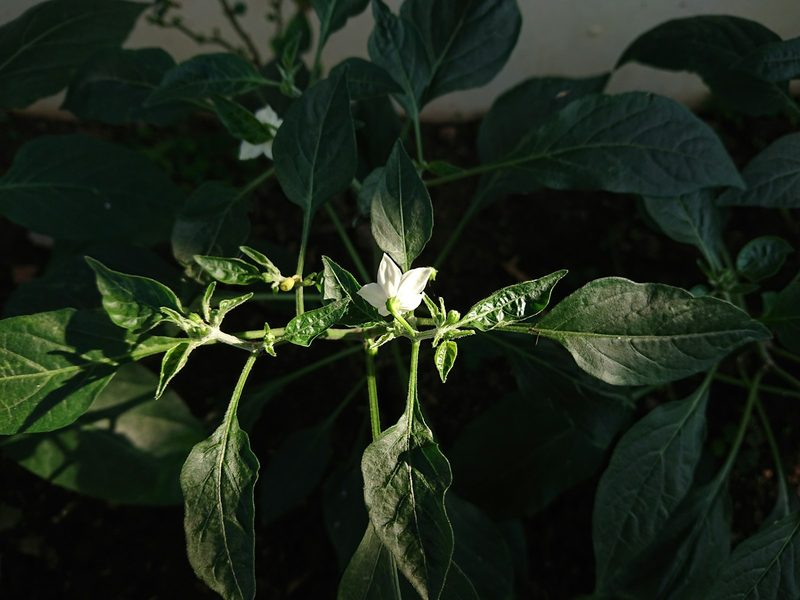

Aussaat
Januar bis März: Saatgut, Anzuchterde, Saattiefe
Chilis selbst anzubauen ist einfacher, als viele denken. Vor allem braucht es Geduld: Von der Aussaat bis zur ersten reifen Schote vergehen je nach Sorte sechs bis neun Monate. Besonders scharfe Sorten wie Habanero lassen sich dabei am meisten Zeit. Wer früh im Jahr startet, kann sich im Sommer über eine reiche Ernte freuen.
Einen Garten brauchst du dafür nicht. Ein heller Platz am Fenster für die Anzucht und später ein sonniger Balkon oder ein Beet reichen völlig aus. Damit deine Pflanzen kräftig wachsen und viele Schoten tragen, kommt es aber auf das richtige Timing und die passende Pflege an.
Auf dieser Seite begleite ich dich durch das Chili-Jahr: Zuerst findest du die einzelnen Phasen vom Samen bis zur Überwinterung in der richtigen Reihenfolge. Danach erfährst du, worauf du bei Licht, Wasser und Dünger die ganze Saison über achten solltest. Zum Schluss zeigt dir eine Monatsübersicht, welche Arbeiten wann anstehen.

Januar bis März: Saatgut, Anzuchterde, Saattiefe

Ein bis vier Wochen: Wärme, Feuchtigkeit, Keimblätter

März bis Mai: Einzeltöpfe, später größere Töpfe

Ab Mitte Mai: Abhärten, Balkon oder Beet

Juni bis August: Bestäubung, Ausgeizen, Stützen

Oktober bis Februar: Rückschnitt, hell und kühl
Wenn die ersten Schoten reif sind, geht es mit der Ernte und Verarbeitung weiter.
| Monat | Aussaat | Umtopfen | Auspflanzen | Düngen | Ernte | Überwintern |
|---|---|---|---|---|---|---|
| Januar | ja | ja | ||||
| Februar | ja | ja | ||||
| März | ja | ja | ||||
| April | ja | |||||
| Mai | ja | ja | ja | |||
| Juni | ja | ja | ||||
| Juli | ja | ja | ||||
| August | ja | ja | ||||
| September | ja | ja | ||||
| Oktober | ja | ja | ||||
| November | ja | |||||
| Dezember | ja |
Zwischen Januar und März startet das Chili-Jahr. Scharfe Sorten wie Habanero brauchen die längste Zeit und kommen als Erstes in die Erde.
Chilis keimen langsam. Je nach Sorte dauert es etwa ein bis vier Wochen, bis sich die ersten Keimlinge zeigen. Scharfe Sorten lassen sich am meisten Zeit. Nicht nervös werden!
Die ersten beiden Blätter sind die Keimblätter. Erst danach wachsen die echten Laubblätter, die der späteren Pflanze ähneln.
Haben die Jungpflanzen zwei bis drei echte Laubblätter, wird es in der Anzuchtschale zu eng. Jetzt werden sie in Einzeltöpfe pikiert und später in größere Töpfe umgesetzt.
Chilis sind frostempfindlich. Nach draußen dürfen sie erst nach den Eisheiligen, also ab Mitte Mai, wenn die Nächte dauerhaft wärmer als etwa 10 °C sind.
Etwa ein bis zwei Wochen vorher stellst du die Pflanzen tagsüber für einige Stunden nach draußen, zuerst im Halbschatten, dann in der Sonne. So gewöhnen sie sich an Wind und direkte Sonne und bekommen keinen Sonnenbrand.
Von Juni bis August zeigen sich die ersten Blüten. Chilis bestäuben sich selbst. Draußen übernehmen Wind und Insekten die Arbeit, auf dem Balkon hilft vorsichtiges Schütteln der Pflanze.
Fallen Blüten ab, ist das oft ein Zeichen für Hitzestress oder zu wenig Wasser. Meist erholt sich die Pflanze von selbst.
Chilis sind mehrjährig und können im Haus überwintern. Das spart die Anzucht im nächsten Jahr, und die Pflanzen tragen oft früher und mehr.